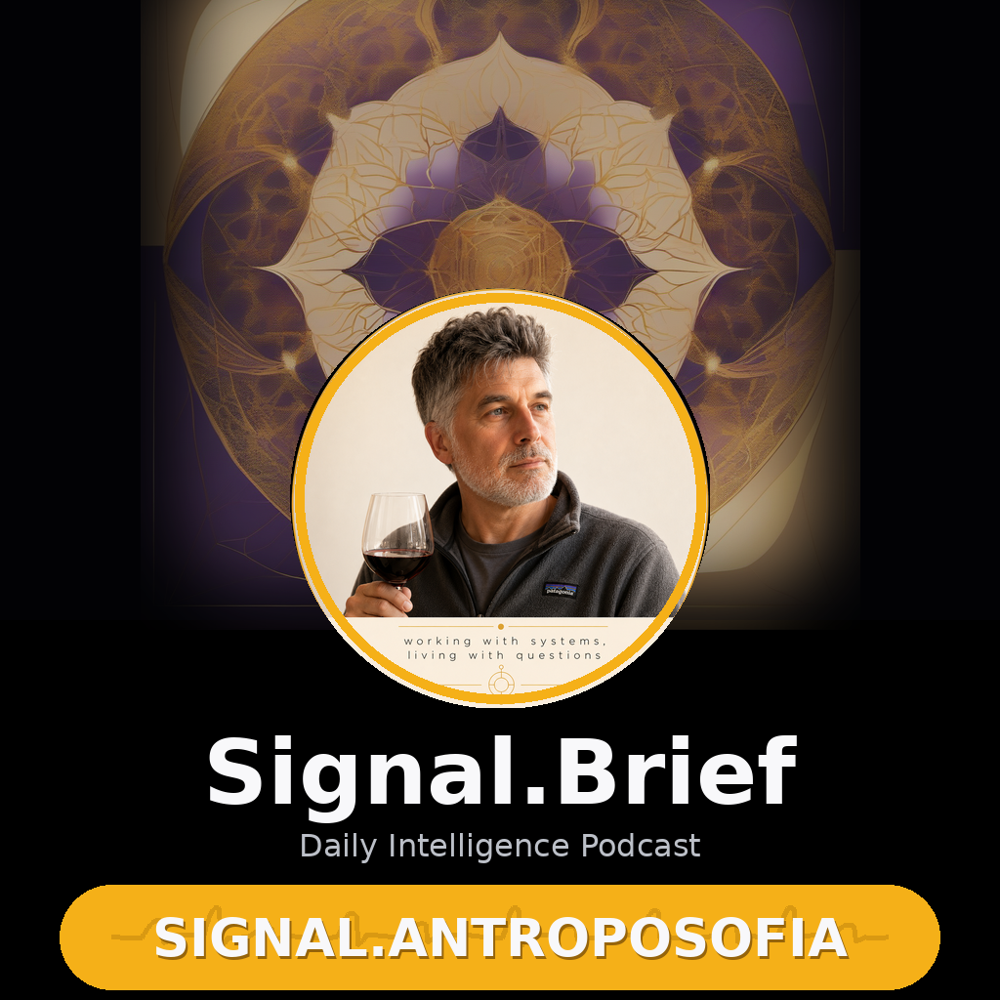

Signal.Antroposofia
un podcast Mikesoft · machines to ideas
Apple Podcasts
Overcast
Pocket Casts
Feed RSS
☕ Se ti è utile, offrimi un caffè
https://it-mikesoft.github.io/signal-brief/antroposofia/podcast/feed.xml